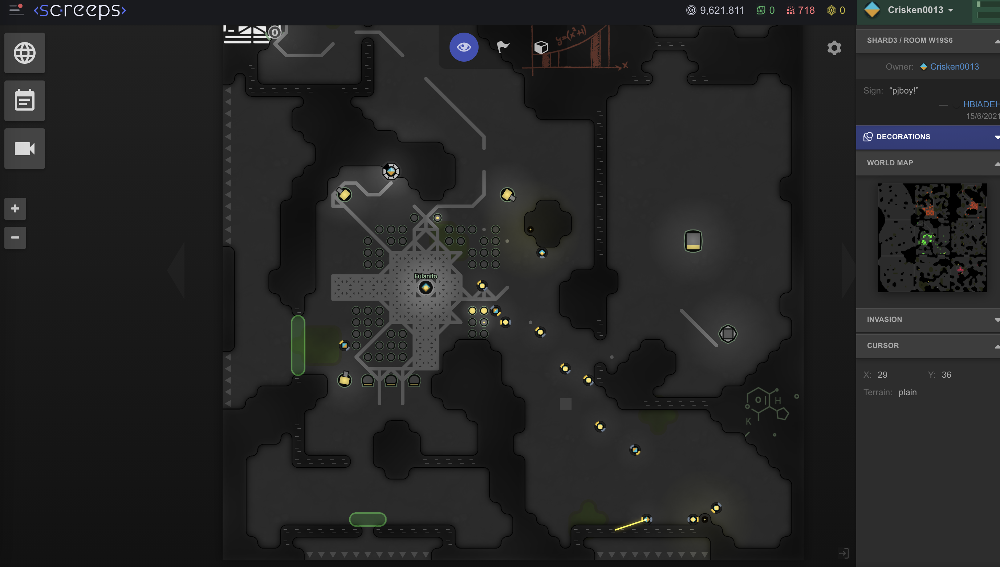
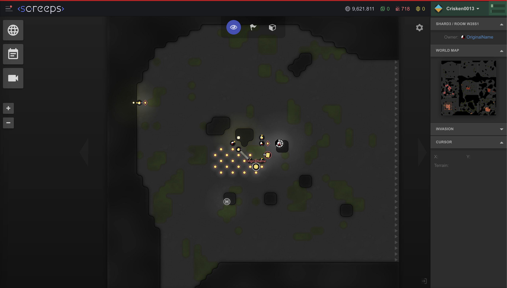

Is this a dog or a cat? Would a computer be able to answer this question? Discuss.
answer
- It’s a dog with a cat mask.
- A computer would be able to answer the question, but not the right answer and also kinda an incomplete answer, because the computer would give more porcentage that is a cat than that is a dog, because it will look for a list of steps that have on the data and would find more similar with the traits of a cat and maybe some other traits that have on common with the dog and some others traits that have just a cat, then it would inclined more to the side of a cat than a dog.
Install surge.sh. We will use this for question 3. Take a look at the documentation and/or the 3 minute video. Write a few sentences describing how it works, and what is different between the free and paid versions.
answer
- Surge.sh installed
-
The difference between paid and free is that when you pay for surge.sh it give you more capacity like:
- custom ssl
- force http to https
- cross-origin
- resource sharing
- custom redirects
For the homework that was due July 4, turn it into an html file with associated image files. Take a screenshot of the top part of that as deployed on surge.sh, use MacOS Preview to scale it to a width of 1000, then put that screenshot here.
answer
Write 5 crooked, multi-faceted, uproarious, impulsive, mechanistic, convoluted, inimitable, bow-legged, fine-grained, intense functions … and put them all on the same graph.
answer
const craWilComTriAmazDeliWeirExtreDanWacFunc5 = (x) => craWilComTriAmazDeliWeirExtreDanWacFunc4(tan(x*x)**abs(x)+atan(x))
const craWilComTriAmazDeliWeirExtreDanWacFunc4 = (x) => craWilComTriAmazDeliWeirExtreDanWacFunc3(craWilComTriAmazDeliWeirExtreDanWacFunc1(craWilComTriAmazDeliWeirExtreDanWacFunc3(x)))
const craWilComTriAmazDeliWeirExtreDanWacFunc3 = (x) => asin(x/x)-sin(x/x)*log(x*Math.fround(x*Math.random()))+cos(x)
const craWilComTriAmazDeliWeirExtreDanWacFunc2 = (x) => -abs(x*-tan(x))/sin(x)**Math.random(x)
const craWilComTriAmazDeliWeirExtreDanWacFunc1 = (x) => atan(x*atan(x))*cos(x*cos(x))/Math.random(x)
//functions in the graphs
const superDoppeyExtraMegaFunc5 = (x) => superDoppeyExtraMegaFunc3(x) / abs(x) + cos(x*x) / sin(x+x)
const superDoppeyExtraMegaFunc4 = (x) => superDoppeyExtraMegaFunc3(x) + abs(x) + cos(x+x) / sin(x+x)
const superDoppeyExtraMegaFunc3 = (x) => superDoppeyExtraMegaFunc2(x) / sin(x*x) ** cos(x/x)
const superDoppeyExtraMegaFunc2 = (x) => superDoppeyExtraMegaFunc1(x) / sin(x)
const superDoppeyExtraMegaFunc1 = (x) => craWilComTriAmazDeliWeirExtreDanWacFunc5(x) ** cos(x)
In the xy-plane the red curve is the graph of some anonymous function, and the blue straight line is tangent to the red curve at some point in the fourth quadrant. Does the tangent line have a positive or negative slope? Approximately what is the slope of that line? Explain.

answer

Here is the original graph on top of my own graph. In my own graph I draw this function: f(x) = (-1/2)*x + 0.3, and it looks like the slope is almost identical to the original graph. So I think the tangent line in the original graph has a slope of about -1/2.
Mental math: Go through the list of all 1 and 2 digit primes in your head. This might take a few minutes. Then look here: Primes numbers -- how many primes did you miss? How many non-primes did you think were primes? Which were these? Would a computer be able to answer this question? Discuss.
answer
The numbers that i mentioned went 2, 3, 5, 7, 11, 13, 17, 19, 23, 29, 31, 33, 37, 39, 41, 43, 47, 49, 51, 57, 59, 61, 67, 69, 71, 77, 81, 87, 89, 91, 97, 99.
-
And the non primes that i mentioned went:
- 33, 39, 51, 57, 77, 81, 87, 99.
- 53, 73, 79, 83.
And the time that it took me was 1:42
Write a function signFunc(x) that returns:
- 1 if x is positive
- if x is zero
- -1 if x is negative
answer
function signFunc(x){
if(x == 0){
return 0;
}
else if(x > 0){
return 1;
}
else if(x < 0){
return -1;
}
}
Write a function signProduct(nums) that takes an array of numbers and calculates the signFunc of the product of those numbers.
answer
function signProduct(nums){
let positiveNum = 0;
for(let n of nums){
if(n == 0){
return 0;
}
else if(n < 0){
positiveNum++;
}
}
if(positiveNum%2 == 0){
return 1;
}
else{
return -1
}
}
Take 3 different screenshots of Screepslandia on three different days, preferably spread out over 10 or more days. Explain what is going on, and what is changing from one screenshot to the next.
answer
I took these screenshots on a Monday, Wednesday, and Saturday. Although the screenshots show different rooms, I will explain what has been changing.
-
In the first screenshot I built a storage and I found energy for it, and I built a terminal and three labs.
 -
In the second screenshot there is a room that I wanted but somebody stole it from me!
 -
In the third screenshot we can see the distance from my room, on the right (the diamond) to the room of the thief on the left (the white, black and brown circle).
Do a git pull on the algebra-for-cats repository. Notice the new kaboomy directory. This is a direct copy of Kenneth's game -- we call this a "fork".
- Alex and Cris: add some new levels to the game; you can also modify existing levels as you like. Please communicate between the two of you as you work -- this is an exercise in using git as well as kaboomjs.
- Kenneth: please help Alex and Cris if you like; also, feel free to modify your original copy of the game as you like. Show some code snippets and screenshots and explain what you've done.
answer
I added one level more and added characters to the level 25.
Play the Flexbox Zombies game and get through a few more levels. Take 2 screenshots when the game is particularly interesting or notable and explain what is going on.
answer
The images show the chapter6 that teach you how to use the flex-shrink, and what’s going on is that the goo zombies and the crossbow range (The box that has a white solid border, don’t confuse it with the one that has the diagonal lines) shrink automatically. To defeat the goo zombies we use flex-shrink, because they shrink as you can see in the second image. flex-shrink works with a number with a non-negative number: if the goo zombies shrink at the same time, it means that they all are shrinking in one, if there is a goo zombie that shrink more it means that is shrinking two times more faster then is shrinking in 2, and so.
Let f(x) = x² - x + 41. Prove or disprove that f(n) is prime for all non-negative integers n.
answer
100 and 41 because 100*100-100+41=9959 and 41*41-41+41=1681 and those are not prime, in fact I disprove that f(n) of the function f(x) = x² - x + 41, is prime for all non-negative integers n.